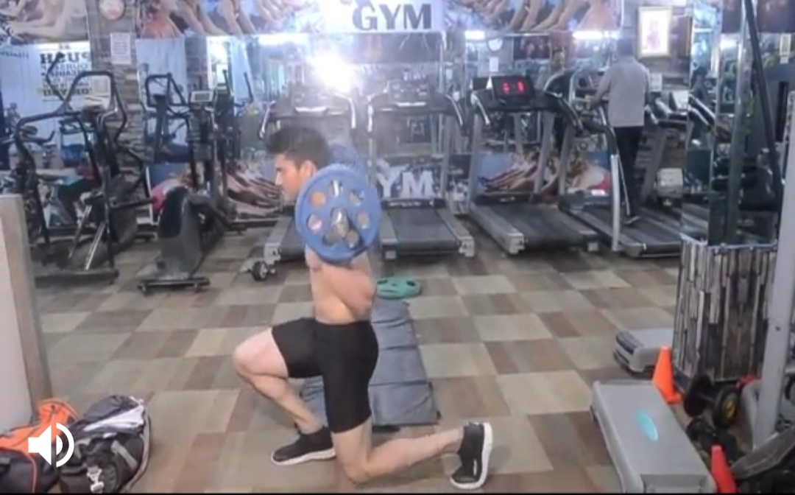
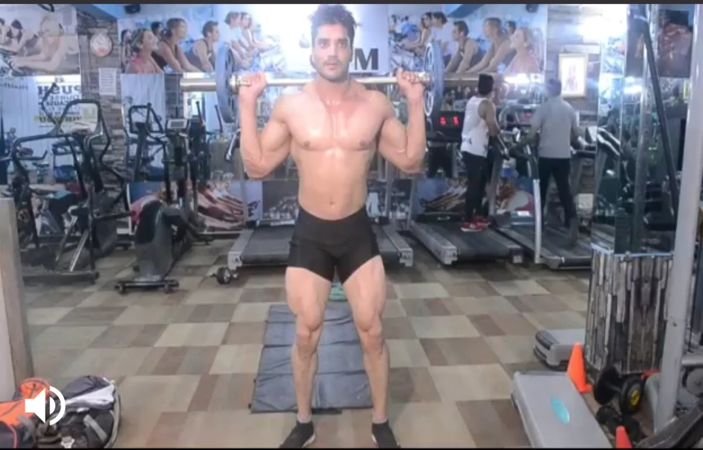
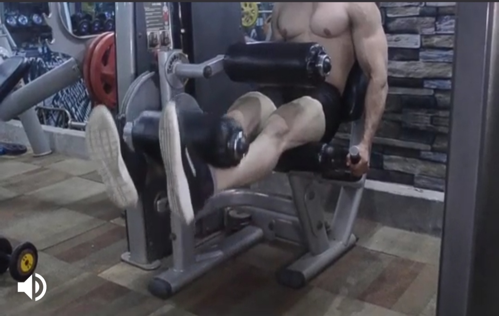
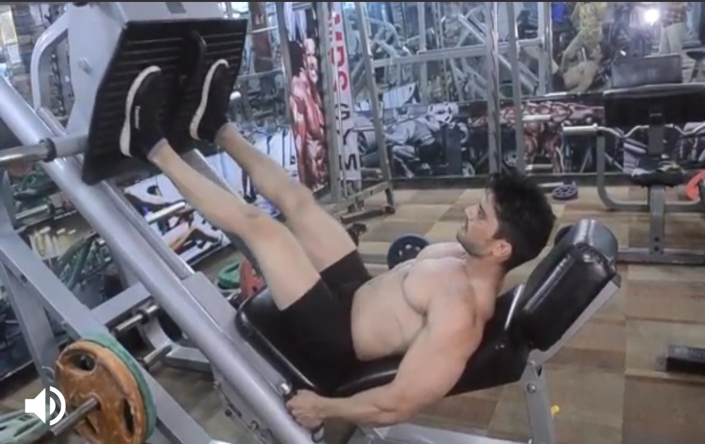

Barbell Lunges
Body Parts:Leg
Description:
Position Barbell behind neck so it rests on back of shoulders. With feet starting together, step forward the floor in a controlled fashion.
A knee on the opposite side of the foot that is forward should nearly touch the floor. Reverse the motion and step back into an upright position.
-----------------------------------------------------------------------------------------------------------------------------------------------------------------


Barbell Squat
Body part:Leg
Description
Step into the rack and position the bar at back of shoulders, neck height, grasping the bar on the sides. Pushing elbows up maintains bar stability and comfort.
Making sure to keep the chest pulled up, dismount from the rack and position heels shoulder width apart, facing 45 degrees out. As you descend,
push your knees out in line with your toes and allow your bum/ hips to bend out while keeping your chest and elbows up.
Descend to parallel or past for full range of motion and then push up through your heels, driving through your hips and keeping your chest up. Repeat.
--------------------------------------------------------------------------------------------------------------------------------------------------------------------------


Leg Extension
Body part:Leg
Description
Sit on the leg extension machine with your legs under the pads and hold onto the side bars. Extend your legs by contracting your quads.
Slowly return to the starting position.
-------------------------------------------------------------------------------------------------------------------------------------------------------------------------------


Leg Press
Body parts:Leg
Description
Starting position: Sitting on a leg-press machine, position your feet together against the crosspiece about shoulder-width apart and toes pointed slightly outward.
Grasp the handle grips or sides of the seat. Bend your knees and lower the weight as far as possible without changing the position of your hips.
Do not lower the weight so far that your hips star to curve up off the seat. Pause briefly, then slowly push the weight back up using your heels,
not your toes. Do not lock your knees at the top, but rather take the weight to just before lock. Then begin to lower the weight again in a slow and deliberate fashion.
-------------------------------------------------------------------------------------------------------------------------------------------------------------------------------------------